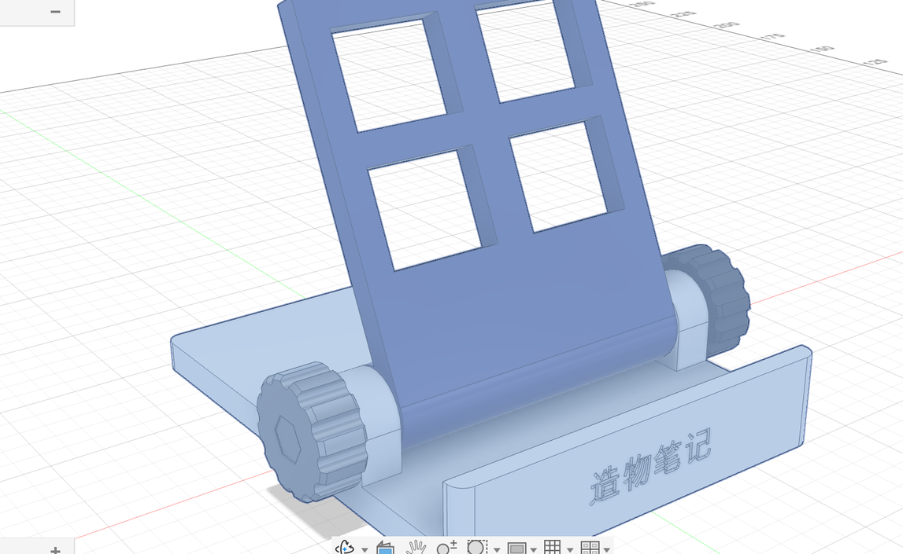
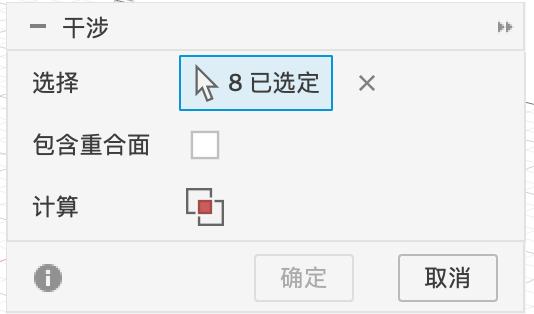
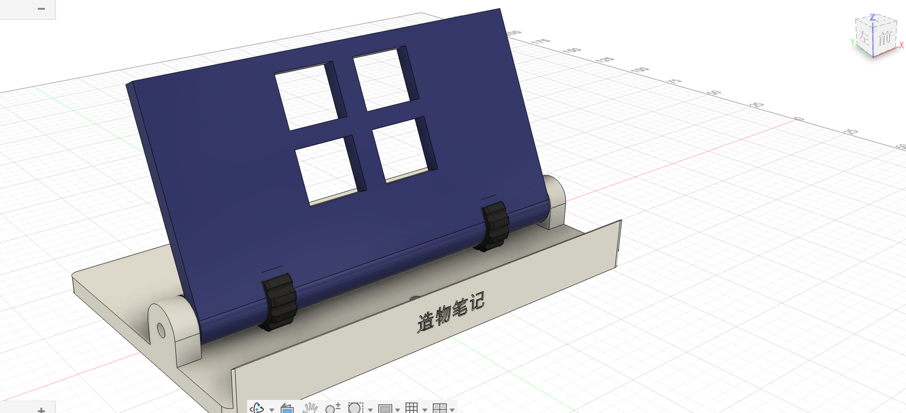

P9 检查与修改
交给打印机之前，先在电脑里检查一遍：零件之间有没有撞在一起（干涉）、关键尺寸对不对（测量），再试试改参数，看看“参数化”到底意味着什么。
干涉检查：零件有没有撞在一起#
- 「检验 ▾ → 干涉」。
- 在浏览器里框选（或按住 ⇧ 点选）全部 8 个零部件。
- 点「计算」右边那个两个方块叠在一起的图标，Fusion 开始计算。



干涉
| 选项 | 含义 |
|---|---|
| 选择 | 参与检查的零部件或实体 |
| 包含重合面 | 勾选后，两个零件“面贴面”（接触但没有重叠）也会被列出来。一般不勾：比如螺丝头底面贴着旋钮的坑底，这是正常的 |
| 计算 | 点右边的图标开始计算 |
结果：本例没有干涉（用 API 核对过，0 处）。如果有，结果里会列出每一对撞在一起的零件，并把重叠部分显示成红色，点列表里的一行就能看到它在哪。
测量#
- 「检验 → 测量」（快捷键 I）。
- 点第一个对象（面、边或点），再点第二个。结果显示在对话框里，画布上也会标出来。


测量
| 选项 | 含义 |
|---|---|
| 选择过滤器 | 只选面 / 边 / 点，避免点错 |
| 精度 | 结果显示几位小数 |
| 次级单位 | 同时显示另一种单位（比如英寸） |
| 清除选择 | 重新选 |
| 显示捕捉点 | 选边时显示端点、中点、圆心等可捕捉的点 |
| 结果 | 距离、角度；选单个对象时显示长度、面积、半径等 |
改参数：参数化建模的威力#
- 「修改 → 更改参数」，把
w的表达式从80 mm改成160 mm，点「确定」。


图 P9-6底座和靠背都变成两倍宽：一个平板支架（拖动中间的竖线对比）
底座、靠背都跟着变宽了，耳朵和孔的位置也对。但仔细看：旋钮、螺丝没有跟着跑到新的耳朵外面，还留在原来的位置。
- 把
w改回80 mm。保存一个新版本（⌘S）。